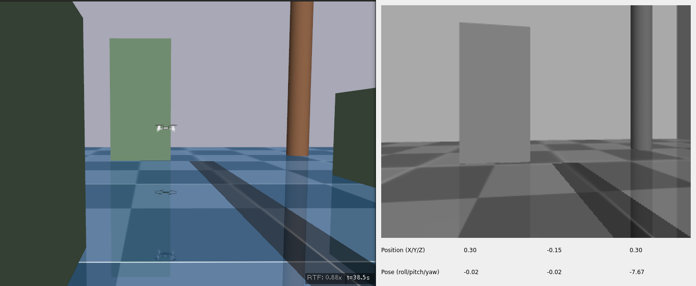
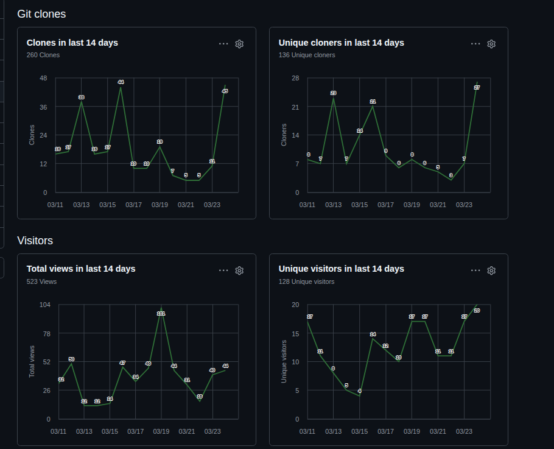

CrazySim
CrazySim is a software-in-the-loop simulation framework for the Bitcraze Crazyflie nano quadrotor platform. The framework runs the actual Crazyflie firmware in the simulation loop with Gazebo and MuJoCo physics backends, enabling direct transfer of control algorithms from simulation to real hardware with minimal modification. It supports both single and multi-robot scenarios with swarms up to 32 Crazyflies, and integrates with CFLib and CrazySwarm2 for a ROS 2 interface. As part of the ICRA 2024 paper, a model predictive controller was tested and validated in CrazySim before deploying to hardware.
Recent additions to the MuJoCo backend include simulated Multi-ranger ToF distance sensors for obstacle avoidance, AI-deck camera streaming using the CPX protocol for FPV and vision-based autonomy, realistic BMI088 IMU sensor noise with per-drone randomized bias and scale factors, ground effect modeling for near-surface flight, inter-drone downwash aerodynamics, and configurable wind fields with Dryden turbulence.
The project has gained traction in the community with 131 stars and 24 forks on GitHub, and has been adopted as a teaching tool in university courses at the University of Illinois and the University of Zagreb in Croatia.



